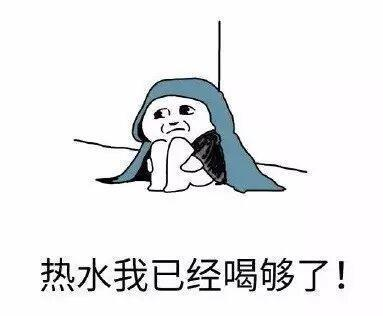
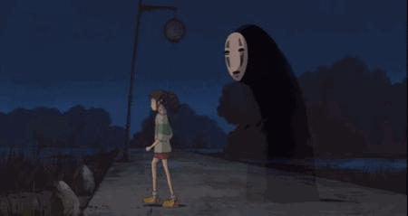
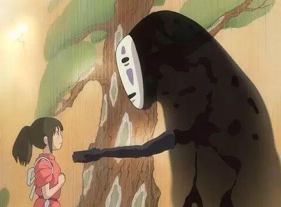
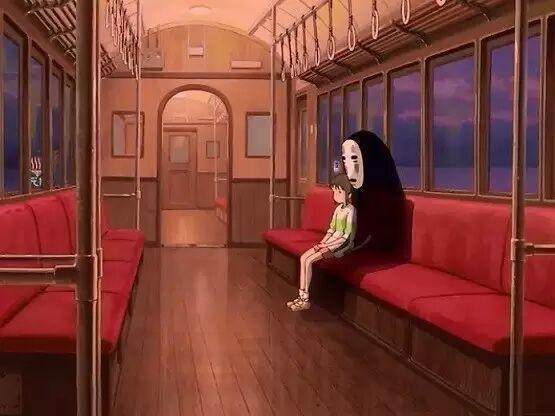

别傻了，叫你“多喝热水”的才是真爱！
据说这是女生最讨厌男生说的话
听一次炸一次，绝不手软
▼
有一点我不是很明白
就是“多喝热水”这句话
到底错在哪里啊？？？
这还得从当年很火的段子说起
▼
女：人家来姨妈肚子痛
男：多喝点热水
女：人家感冒了好难受
男：多喝点热水
女：我们分手吧
男：为什么？我会很伤心的
女：多喝点热水啊！
就是为了讽刺那些很敷衍很没用
只会说废话却不会行动的男生
然后越来越多的段子
把男生的“多喝热水”逼上绝路

然而“多喝热水”
又有什么错啊！！！
比如下面这个例子：
女友痛经疼得厉害
我让她多喝点热水
她说我不爱她了
于是我带她去医院
挂号，排队会诊
折腾了一下午
最后医生告诉她
让她回去多喝点热水
所以你们看！！！
多喝热水本身并没有错啊
错的是你的态度
不是“多喝热水”这句话
当你痛经的时候
要是一个男生对你说：
多喝热水，等会我去帮你捂捂肚子
当你感冒的时候
要是一个男生对你说：
多喝热水，等我过去帮你暖暖身子
你确定你还会讨厌多喝热水这句话？
毕竟女人是水做的
多喝热水确实是有用的
让你多喝热水的男人
难道比不过跟你喝酒的？
只有真正默默关心你的人
才会惦记着让你多喝热水
比如无脸男
像不像跟在你后面的暗恋者
默默爱着你、陪着你、暖着你
无言的陪伴，独宠的温柔
就算你看不到，也没关系

他们可能不怎么会说话
也不会花言巧语讨好你
只会傻傻的让你“多喝热水”

你为什么不喜欢听到
“多喝热水”这几个字
你为什么不喜欢
让你多喝热水的那个人

所以......
别傻了，叫你“多喝热水”的才是真爱！
珍惜你身边让你多喝热水的那个人吧！
电协信息部 白金朋